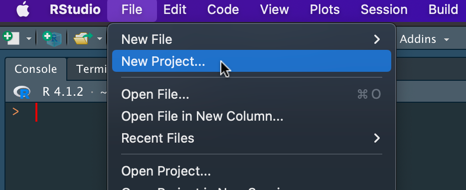
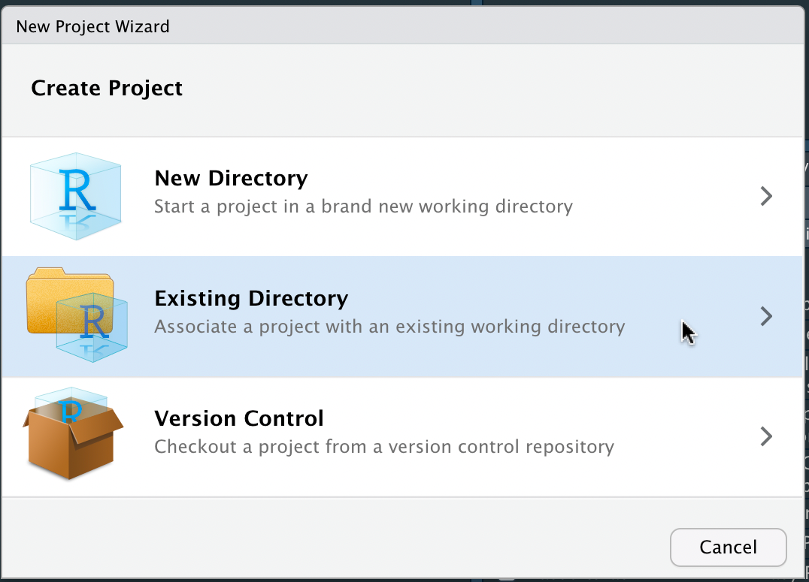

R code
File formats
As per the study definition best practice, outputs from the cohortextractor should be provided as
.rdsfilesUse the readr package to read and write
.rdsfilesobject <- readr::read_rds(file.path("output", "mydata.rds")) readr::write_rds(object, file.path("output", "mydata.rds"), compress = "gz")
- All
.rdsfiles should all be classified ashighly_sensitivein actions, as they cannot be opened on the results server and therefore cannot be reviewed or released. readr::write_rdsdoes not compress files by default. It is recommended that you compress .rds files using the argumentcompress = "gz".- Use
file.pathto construct file paths that are reproducible across operating systems.
RStudio project
- Define your repo as an RStudio project in RStudio as follows
- File | New Project…
 - Existing Directory
 - Then find your repo
- This will create a
.Rprojfile at the top level of your repo - Commit the file into your repo
- Now you can double click the
.Rprojfile to open the repo in RStudio, so you can work on your R scripts more conveniently
- File | New Project…